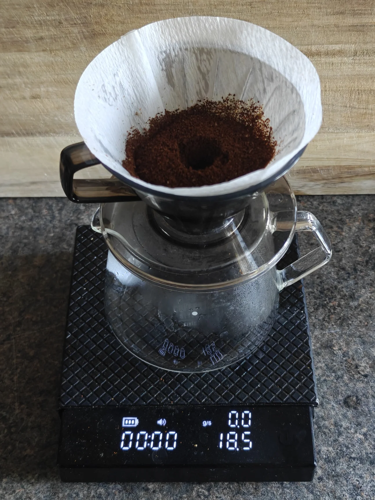
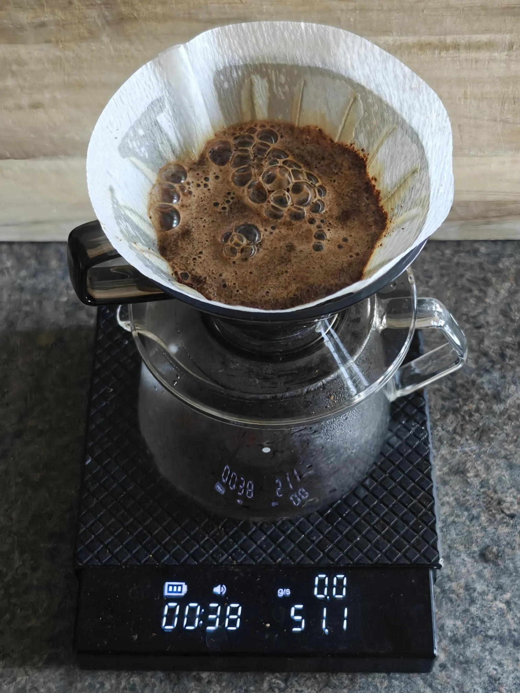
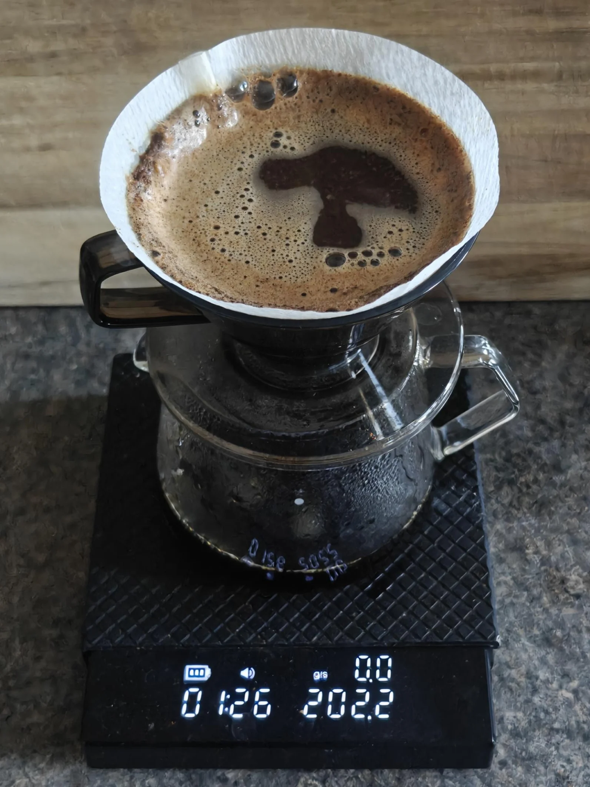
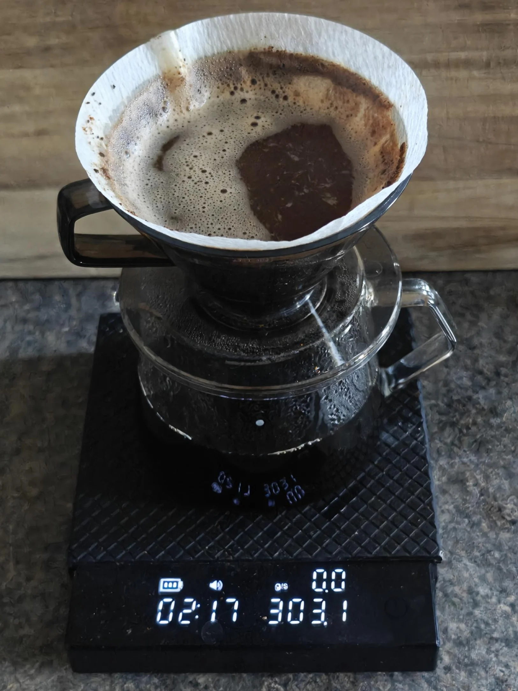
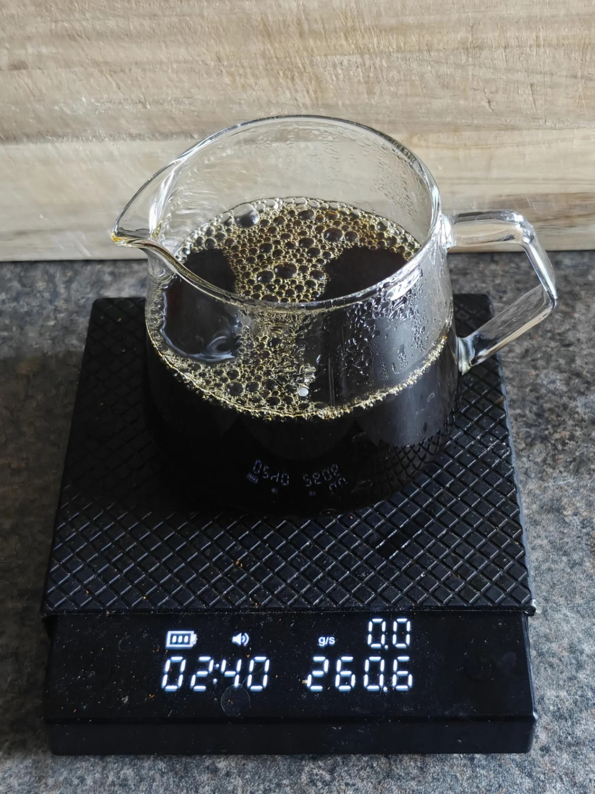
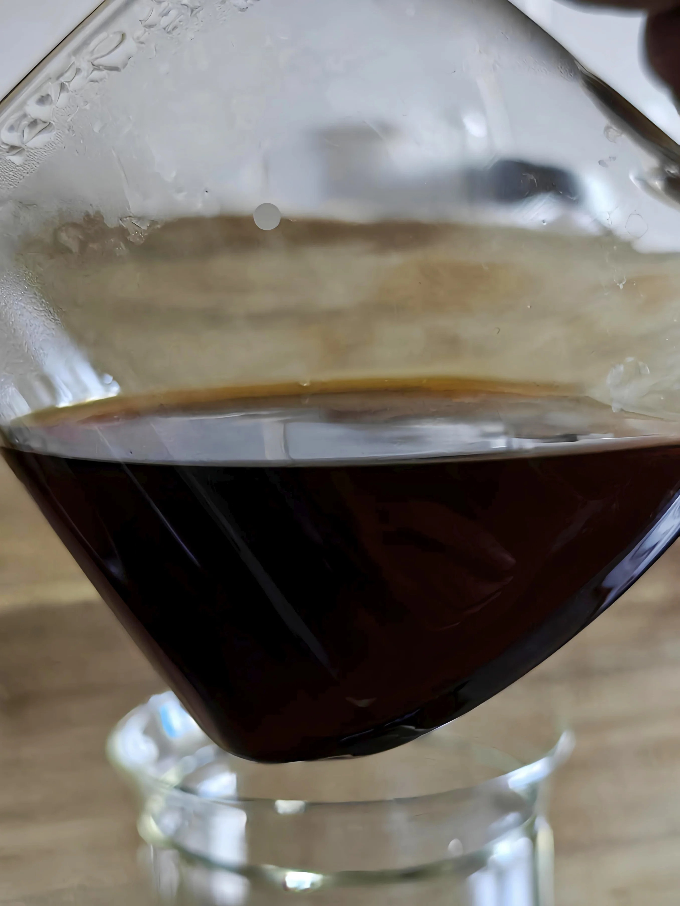
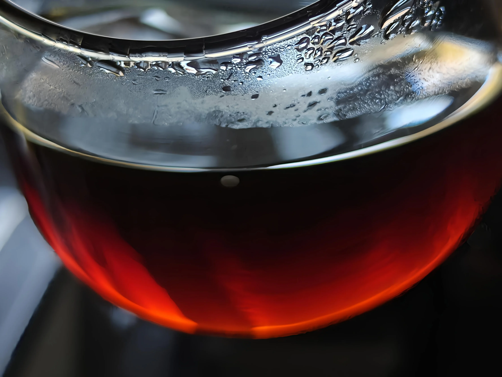

Brew recipe: 18.5g coffee and 300g water at 95°C
0:00 50g (0g total) - 0:25 (2g/s)
0:50 150g (200g total) - 1:15 (6g/s)
1:50 100g (300g total) - 2:00 (10g/s)
2:35 Finished
When eating and drinking, our taste buds are often the last sensory organs that interact with the meal or beverage. The first, and most impactful, sensory organ is our eyes - the way we perceive an item takes precedence. Everything else be damned. While tasty cups of coffee are amazing, beautiful, clear brews add several layers of amazement but lose on depth of flavour - this Silky Sweet recipe aims to achieve both in parts.
Silky Sweet chases clarity on the visual spectrum first and taste second. I want a vibrant, almost gem-like liquor that I can gaze at while sipping.
Something to avoid is over-agitation, as it can cause fines and particulates to pass through filter papers, leading to a more opaque brew that is cloudy and without the mesmerising photonic shimmer.
Something to achieve is a flavourful brew... This requires agitation. To achieve a clear brew with high extraction, I propose using a slow pour during the bloom over a longer time period to help hydrate the grounds without fines passing through. As we get closer to the final pour, we slowly increase agitation, as the grounds should be more saturated and less likely to impact the visual appeal of this brew.
The TLDR above has the basics of the recipe that can be followed; below I will expand and *ahem* give more clarity on how and why.
We are using 18.5g of coffee, 300g of water, and staying at 95°C throughout.
Starting with the bloom at 0:00, we do a gentle 50g bloom over 18.5g of ground coffee until the timer reaches 25s. The pour should limit agitation as much as possible so that the grounds do not move. My pour rate here is 2g of water per second.
The second pour is at 0:50 (25s rest from the bloom); we do a higher pour of 150g until the timer reaches 1:15. The pour will be in circles starting between the centre and rim of the brewer. The pour rate here is 6g per second, using the height of the pour to cause agitation and not the actual movement of the pour.
The final and third pour is at 1:50 (35s rest from the previous pour); we do keep the same height as before and pour until the timer reaches 2:00. This will keep the same pattern (between the rim and centre and staying in circles) but a significantly faster pour of 10g per second.
No more pours after 2:00, and the brew should finish at 2:35 ± 5s.
The brew should have a clear and gem-like quality to it. The taste is similar to a tea-like brew; it has a delicate and gentle taste that doesn't linger very long. The depth of the brew should be on the perceived sweeter side, with more roasted facets - think the molasses feeling from dates or treacle without the stickiness.






